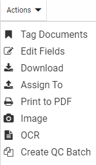
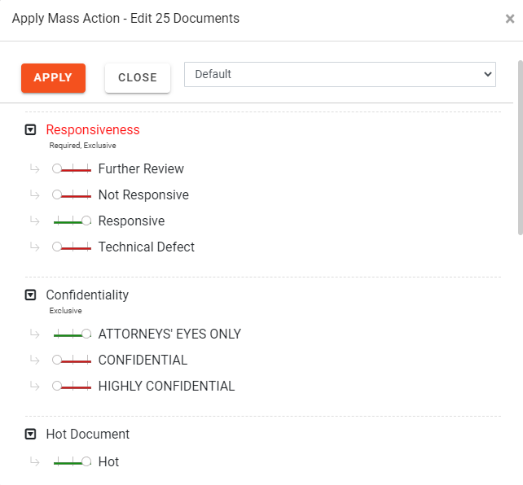
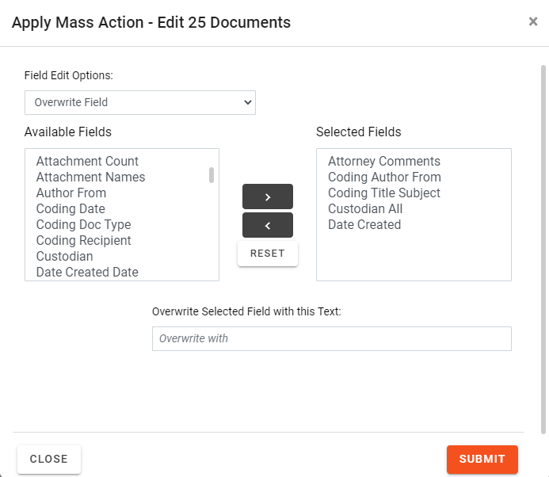
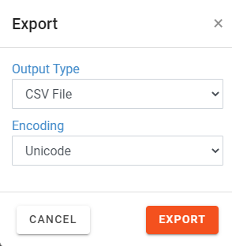
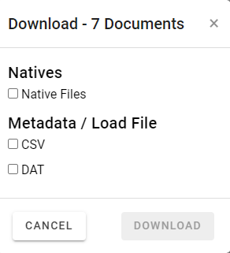
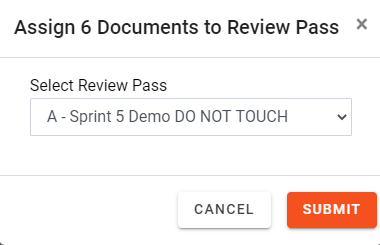
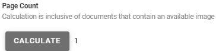

Mass Actions are actions performed on multiple documents at one time, such as populating coding fields and/or applying tags. Existing permissions apply for mass actions. Mass actions are performed from the Search Results tab or the Relationship Pane in the Document Viewer.
Select Documents for Mass Action
Perform the
following procedure to select multiple documents on the Search Results tab or the Review Grid in the same way all at once.
Log in to .
Complete the initial steps to open the ResultsGrid. See Work with Search Results.
Optional:
Sort the documents in the Results grid. See Work with Grid Columns for details on sorting, filtering, and so on.
All documents: To perform a mass action on all documents in the
current document set:
Click SELECT ALL DOCUMENTS in the column header row to select all the documents as shown in the following:
Click CLEAR SELECTION to deselect your documents.
Selected documents: To perform a mass action on selected documents in the
current document set, select
the check boxes associated with any documents you would like to perform a mass action
as shown in the following figure.
Select
in the mass action toolbar, then click the mass action you would like to perform. See the following image:

Note: Once documents are selected, changing the sort of any grid column will clear all selected documents.
Tag Multiple Documents
Note: The following steps refer to tagging multiple documents in the Results grid. For information on mass tagging within the Document Viewer, see Manage Mass Actions in the Relationship Panel .
See the
following procedure to select multiple documents in the same way all at once.
Complete the steps described in Select Documents for Mass Action.
In the Actions drop-down menu, select
Tag Documents.
In the
resulting dialog box, make the following selections:
Tag
group: select the applicable tag group .
Tags:
select or clear individual tags. To leave tags that have already been
applied unchanged, leave the option box as-is.
See the following figure for details:

Click .
Repeat this procedure for other groups of documents
that must be tagged in the same way.
Edit Multiple Fields
Users with appropriate permissions can replace field
content across multiple records at one time:
Use the
following procedure to edit documents located in the Results grid. See Work with Search Results.
Complete the steps described in Select Documents for Mass Action.
Click
in the mass action toolbar to display the menu.
Select
Edit Fields.
In the
Edit Fields Options list, select one of the following actions:
Search and Replace: Find specific
content in a selected field(s) and replace it with different content.
In
the list of Available Fields,
double-click each field to be changed in the same way. Alternatively,
use Shift+click or Ctrl+click to select a contiguous or non-contiguous
set of fields, respectively, then click > to move these fields into
the Selected Fields list.
Enter
the content to be replaced in the Search
for field. This entry is not case sensitive.
Tip: An entry is required in the Searchfor field. If you want to replace empty fields with content, use the
Overwrite Field option
Enter
the new content in the Replace with field. The format of your entry must
match the field type (for example, if a Date field must be changed
from 01/01/2014 to another date, use the same format for your replacement
entry). For text entries, the capitalization used here will be used in
the selected field(s).
Copy Field: Copy the content of
one field to another field.
In
the Copy From field, select the
field containing the content you want to copy.
In
the Copy To field, select the
field in which the same content should be used.
Overwrite Field: Replace whatever
content exists in a selected field(s) with different content.
In
the list of Available Fields, double-click each field to be changed in
the same way. Alternatively, use Shift+click or Ctrl+click to select a
contiguous or non-contiguous set of fields, respectively, then click >
to move these fields into the Selected Fields list.
Enter
the new content in the Overwrite Selected Field with this Text box. The
format of your entry must match the field type (for example, if a Date
field needs to be changed from 01/01/2014 to another date, use the same
format for your replacement entry). For text entries, the capitalization
used here will be used in the selected field(s).
Example:
All or part of a field’s content can be entered. For example, a Custodian's
name might be entered as both “Jon Smith” and “John Smith”
in your case. For consistency, you could search for “Jon” and replace
it with “John” so that the company name is consistent. See the
following:

Click
.
To perform another mass action on the same
selected documents, click
in the mass action toolbar to display the menu.
Export Data for Multiple Records
By default, up to 1 GB of data can be exported from an case into a CSV or DAT file. Your administrator may configure a different
limit.
To export data, use the
following procedure to export data located in the Results grid. See Work with Search Results.
Optional:
Sort the documents. Documents will export in the order shown. See Work with Grid Columns for details about sorting, filtering, and so on.
Select the documents to be exported. You can select one, some, or all of the documents located in the grid by selecting the check box for each document. At least one document must be selected.
To select all documents in the grid, complete the steps described in Work with Mass Actions.
Click
to open the mass actions menu and select Export. The Export dialog box appears.

Select the records to be exported:
On the
Output Type drop-down menu, select CSV File or DAT File.
On the
Encoding drop-down menu, select Unicode, ASCII, or .UTF-8.
Click .
The selected output file type is generated with the file name: Export.CSV or Export.DAT.
Note: : The file size is monitored by . If it reaches the size limit (1
GB or as configured by your administrator), a message then alerts
you and the process is canceled. To address this
issue, reduce the size (select fewer records and/or fewer columns
of data), or contact your administrator for assistance
Download Data for Multiple Records
By default, up to 1 GB of data can be downloaded from an case. Your administrator may configure a different
limit.
Note: You must have permissions to access Mass Actions and Launch Native to complete these procedures.
To download data, use the
following procedure to download data located in the Results grid. See Work with Search Results.
Optional:
Sort the documents. Documents will export in the order shown. See Work with Grid Columns for details about sorting, filtering, and so on.
Select the documents to be downloaded.. You can select one, some, or all of the documents located in the grid by selecting the check box for each document. At least one document must be selected.
To select all documents in the grid, complete the steps described in Work with Mass Actions.
Click
to open the mass actions menu and select Download. The Download dialog box appears.

Select the records to be exported:
Natives: Native documents can be downloaded without creating an export. Contents will be provided in a zip file and placed within a Natives folder. Documents will be identified by the BEG DOC number.
Metadata/Load File: Metadata can be downloaded to a .CSV or .DAT file. Contents will be provided in a zip file and placed within a Data folder.
.CSV file:. Documents will be identified by the BEG DOC number and include the fields currently in the grid view.
.DAT file: Documents will be identified by the BEG DOC number. Fields and Tags available in the user grid will be provided in the load file if load file is selected. A new field will be added to the end containing native location to be used to update.
Click .
The selected output file type is generated and placed in your Downloads folder.
Note: : The file size is monitored by . If it reaches the size limit (1
GB or as configured by your administrator), a message then alerts
you and the process is canceled. To address this
issue, reduce the size (select fewer records and/or fewer columns
of data), or contact your administrator for assistance
Assign Documents to a Review Pass
Documents may be assigned to an existing review pass. When the documents are assigned to the review pass, they are automatically batched for that review pass. This eliminates having to access the Review Pass screen, refresh, and create batches manually. The ability to assign documents to a review pass by using a mass action is controlled by the review pass administration.
Perform the
following procedure to assign one or more documents located in the Results grid to a review pass. See Work with Search Results.
All documents: To assign a review pass to all documents in the
current document set, complete the steps described in Select Documents for Mass Action.
Selected documents:
To assign a review pass to selected documents, select
the check boxes associated with any documents you would like to assign to the review pass,
as shown in the following figure.
Click
in the mass action toolbar to display the menu.
Select Assign To. The Assign X Documents to Review Pass dialog box appears.
On the Select Review Pass drop-down menu, select a Review Pass.

Note: Only review passes with created batches display for selection. TAR related review passes will not be available for selection.
Click . A prompt displays to indicate the documents were added to the selected review pass.
Perform Mass Action Print to PDF
Perform the
following procedure to print one or more documents on the Results grid. See Work with Search Results.
Note: Users must have permission to View Redactions in order to mass print from . Since the printer can burn in redactions when printing, users by default must have rights to view redactions to complete printing operations. For more information on assigning user permissions, see Assign Permissions.
All documents: To print all documents in the
current document set, complete the steps described in Select Documents for Mass Action.
Note: Printing a PDF with more than one document selected produces a PDF for each document.
Selected documents:
To print selected documents, select
the check boxes associated with any documents you would like to print,
as shown in the following figure.
Click
in the mass action toolbar to display the menu.
Select Print to PDF. The Print to PDF dialog box appears.
Complete the Print to PDF dialog box by selecting all required options. For instructions about how to do so, click here.
Options tab:
Original images only: to add image keys to
the bottom-right corner of each page, select the Image
Key option in the Quick Endorsements
area.
Original images only: to include a text watermark,
enter the required text in the Watermark
field. This text will display “behind” existing document content, similar
to a stamp.
Note: Redactions may obscure some or all of a watermark.
To print images from more than one image set
(to minimize or eliminate the number of missing images), complete the
following steps:
Add
all image sets (original and production) from which images may be used
to the Selected list. To do so, select the image set(s) in the Available list and click the right arrow.
Review
the selected image sets; if any set is not required, click on the set in the Selected
list, then click the left arrow to move it to the Available
list.
Review
the order of image sets. The order in the Selected
list determines how finds a document to be printed. For each
image:
looks first in the image set at the top of the list; if the image
is found, it is then printed.
If
the image is not found in the first set, checks the second
set; if the image is found, that is the version that is printed.
If
the image is not found in the first or second sets, continues
to check remaining image sets in the Selected
list, from top to bottom. As soon as it finds the image, that is the version
that is printed.
To
change the order of image sets in the Selected
list, click the name of an image set to be moved, then click the up or
down buttons until the image set is in the required position. Repeat to
move other image sets until the list is in the required order.
If required, select the Include
“Image Missing” slip sheet if image unavailable option.
To print only original images, ensure that
<Original Images> is in
the Selected list. If original images are
missing, they will be skipped in the print job.
The Page Count of your document can be calculated by clicking CALCULATE.

See the below video on how to quickly calculate the page count of any document.
Original images only: reviewers’ annotations
(embedded text, highlighting, and/or mark-ups) are printed by default
if they exist. Perform either of the following actions to change annotation
settings:
To
remove all annotations in original images from the print job, clear the
Print Annotations option.
To
remove individual annotations in original images from the print job, click
each annotation to be removed.
Original images only: all redactions will be
printed in solid format by default if they exist. If you have the permission
to modify/delete other users’ redactions, perform any of the following actions
to change redaction settings:
To
remove all redactions in original images from the print job, clear the
Print Redactions option.
To
remove individual redactions in original images from the print job, click
each redaction to be removed.
To
change redaction format, select the required format from the list below
the redactions list. In this figure, the Crosshatch format is being selected.
Define other aspects of the print job on the Slip Sheets tab and/or Endorsements tab through
the procedures described in this section. Or, click Save
if the print job is ready.
Slip Sheets tab:
A slip sheet is a separator page between documents.
If printing a single document, a slip sheet allows you to include a cover
sheet with document-specific detail. To include slip sheets in your print
job:
Select the Include
Slip Sheets option.
For a plain slip sheet, click the Blank
Page option and skip to step 4.
To include document-specific information in
the slip sheet:
Click
the Fields/Custom option and complete
any of the following steps.
To
include a custom message, enter it in the Custom
Text field.
To
include field content, in the Available
Fields list, select the fields to be included in the slip sheets.
To
include tags from selected tag groups, in the Available
Tag Groups list, select the groups to be included in the slip sheets.
Define other aspects of the print job on the Options tab and/or Endorsements tab through
the procedures described in this section. Or, click Save
if the print job is ready.
Endorsements tab:
Endorsements are document details printed in the header
and/or footer of documents in the original image set.
Note: Endorsements are for
original images only; they will not be added to production-set
images.
To include endorsements in your print job:
Click
the Endorsements tab and perform the following steps.
To include field content in each document’s
header and/or footer:
Click
the Data Fields tab.
Select
one or more fields to be included in a specific area in the header or
footer.
At
the bottom of the fields list, select the location where the field(s)
should be printed, as shown in this example.
Click
Map Endorsements.
Repeat these
steps to include other fields in other locations.
To include tag details in the header or footer,
click the Tag Options tab, then
repeat step 2, selecting tags
instead of fields.
To include a custom message in the header or
footer:
Click
the Custom Text tab.
Click
in the custom text area and type the information (a single line) to be
included.
At
the bottom of the custom text area, select the location where the custom
text should be printed, as explained in step
2.
Repeat these
steps to add custom text to other locations.
Review your endorsements. If changes are required:
For
an area that contains endorsements on multiple lines, change the order of
the lines by clicking an item and clicking the corresponding or
button to move the line up or down, respectively.
To remove a single endorsement from a particular area, double-click on the endorsement in question.
To
remove all endorsements from a particular area, click Clear
for that area.
To
remove all endorsements for all areas, click Clear
All.
Define other aspects of the print job on the Options tab and/or Slip Sheets tab through
the procedures described in this section. Or, click Save
if the print job is ready.
After all print options have been defined, click Save. A prompt displays that indicates the documents were added to the Job Manager to be processed. For more information about the Job Manager, see Overview: Job Manager.
Perform Mass Action Imaging
Perform the
following procedure to image one or more documents on the Results grid. See Work with Search Results.
All documents: To image all documents in the
current document set, complete the steps described in Select Documents for Mass Action.
Selected documents:
To image selected documents, select
the check boxes associated with any documents you would like to image,
as shown in the following figure.
Click
in the mass action toolbar to display the menu.
Select Image.
A dialog box appears. Select required options.
Image Job Options
Option
Description
Color
Options
Select the method by which colors will
be processed.
Note: Color
rendering is explained on many public websites. Refer to those
resources if you want details on color settings.
Use eCap project default
Use
the color settings of the selected eCapture project.
Black and white (1 bit)
Renders
as Group 4 TIFF
Grey scale (8 bit)
Renders
as LZW TIFF
Color (8 bit)
Renders
as LZW TIFF
True color (24 bit)
Renders
a JPG
eCapture
Project
Select the eCapture project to be used
for the imaging job. Files will be processed
using all eCapture project settings (except color settings
if you selected color options for this job).
Original
File Name
Select
the fields containing the Original File Name and Location,
to be included in placeholder files for documents with no
associated native files.
Original File
Location
After all options have been defined, click Submit. A prompt displays that indicates the documents were added to the Job Manager to be processed. For more information about the Job Manager, see Overview: Job Manager.
Perform Mass Action OCR
Perform the
following procedure to OCR one or more documents on the Results grid. See Work with Search Results.
All documents: To OCR all documents in the
current document set, Complete the steps described in Select Documents for Mass Action.
Selected documents:
To OCR selected documents, select
the check boxes associated with any documents you would like to OCR,
as shown in the following figure.
Click
in the mass action toolbar to display the menu.
Select OCR.
A confirmation message appears. To proceed with the OCR job, click OK. A message displays in the bottom-right corner of the screen, indicating the documents were added to the Job Manager to be OCRed. For more information about the Job Manager, see Overview: Job Manager.
Create a QC Batch
Perform the
following procedure to create a QC Batch on the Results grid. See Work with Search Results.
All documents: To create a QC Batch from all documents in the
current document set, complete the steps described in Select Documents for Mass Action.
Selected documents:
To create a QC Batch from selected documents, select
the check boxes associated with any documents you would like to include,
as shown in the following figure.
Click
in the mass action toolbar to display the menu.
Select Create QC Batch.
A dialog box displays requesting you to select a review pass.
Active Learning Enabled Review Pass QC Batches
QC Batches can be created as a part of an enabled review pass. Only records that are part of the original review pass can be added to a QC batch. They can be used for almost any purpose, but most often are used for:
Reviewing Conflicts
Coding Quality Review
Relevancy Score QC
Late stage elusion testing
Coding decisions made outside of the enabled review pass will not modify the Positive or Negative status of the example, so it is important to use the QC Batch option if the coding change is intended to apply to the project.
Using Mass Action, one QC Batch is created for all records submitted with the mass action process. The default batch size selected for the review pass does not apply.
Creating an Active Learning Enabled Review Pass QC Batch
Filter down to the records in your grid view.
Using the Mass Action option, select Create QC Batch.
Select your enabled review pass from the selector.


 in the mass action toolbar, then click the mass action you would like to perform. See the following
in the mass action toolbar, then click the mass action you would like to perform. See the following 

 .
. .
The selected output file type is generated and placed in your Downloads folder.
.
The selected output file type is generated and placed in your Downloads folder.